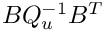

|
Teko Version of the Day
|
This page collects common Teko usage patterns. Use it as a starting point when deciding how to block an operator, which inverse-library entries to define, and where an application must supply extra physics operators.
| Starting point | Use | Notes |
|---|---|---|
| Separate submatrices already exist | Thyra::block2x2 or Teko::zeroBlockedOp / Teko::setBlock / Teko::endBlockFill | Best when the application naturally assembles field-to-field blocks. |
| One monolithic Tpetra matrix with a fixed interleaved nodal layout | Teko::TpetraHelpers::StridedTpetraOperator or XML "Strided Blocking" | Example: [u v p] at each node gives {2, 1} in C++ or "2 1" in XML. |
| One monolithic Tpetra matrix with arbitrary field ownership/order | Teko::TpetraHelpers::BlockedTpetraOperator | Pass a std::vector<std::vector<GO>>; outer index is the Teko block number, inner entries are monolithic global IDs owned on this rank. |
For non-strided application orderings, build a block-membership list from the monolithic map:
Each rank lists only the GIDs it owns. The inner vectors should form the desired field split of the monolithic map; for the usual non-overlapping case, a GID appears in exactly one inner vector. BlockedTpetraOperator assumes a square operator with matching domain and range maps. Teko constructs contiguous block-local maps internally, extracts every (i,j) subblock, and keeps a Tpetra Operator interface for the original monolithic map.
Use it exactly like the strided wrapper when building a native Tpetra preconditioner:
Useful checks while developing the GID lists:
For a generic two-field block system with nonsingular diagonal blocks

block Gauss-Seidel is often a useful starting point: define one inverse per diagonal block and apply them in a triangular sweep.
Use Block Jacobi if you need a cheaper or more parallel preconditioner.
For saddle-point systems, one diagonal block is often zero or singular, so the generic block Jacobi/Gauss-Seidel recipe above is not the right model: it would require inverting that singular diagonal block. Instead, use a Schur-complement or physics-specific approximation. For a generic 2-by-2 saddle-point problem, start with Block LU2x2 and provide an inverse for the nonsingular field block plus an inverse for the Schur-complement approximation. For incompressible Navier-Stokes systems, prefer the dedicated SIMPLE, LSC, or PCD strategies below.
For incompressible Navier-Stokes, prefer the built-in physics factories over manually writing a saddle-point approximation:
"NS SIMPLE" as a robust first configuration. It needs no extra operators unless "Use Mass Scaling" = true."NS LSC" when a least-squares commutator approximation is appropriate. Some strategies request a velocity mass matrix, pressure Laplace operator, or W-scaling vector."Block LU2x2" with "Strategy Name" = "NS PCD Strategy" when the application can provide the pressure operators required by PCD.See Navier-Stokes Preconditioners for the complete option tables and request names.
A common multiphysics pattern is a Navier-Stokes block coupled to one or more scalar transport blocks. For a strided layout [u v p T], first split into velocity, pressure, and temperature, then use a reorder to group velocity-pressure into a nested Navier-Stokes subsystem:
After "Strided Blocking" = "2 1 1", the flat block order is 0 = velocity, 1 = pressure, 2 = temperature. The reorder "[[0 1] 2]" makes a 2-by-2 outer operator whose block 0 is the nested velocity-pressure operator and whose block 1 is the temperature operator. Therefore "Inverse Type 1" in OuterGS applies to the nested flow subsystem, and "Inverse Type 2" applies to the temperature block.
The same idea extends to arbitrary GID blocking: make blockGIDs[0] velocity, blockGIDs[1] pressure, blockGIDs[2] temperature, construct a BlockedTpetraOperator, and call Reorder(*Teko::blockedReorderFromString("[[0 1] 2]")) before building the preconditioner.
When a preconditioner needs physics information that is not present in the monolithic matrix, register a RequestHandler callback. Typical requests are:
| Application data | Request message | Used by |
|---|---|---|
| Velocity mass matrix | "Velocity Mass Matrix" | SIMPLE and LSC mass scaling |
| W-scaling vector | "W-Scaling Vector" | LSC W-scaling |
| Pressure Laplace operator | "Pressure Laplace Operator" | LSC pressure-Laplace strategy and PCD |
| Velocity mass operator | "Velocity Mass Operator" | LSC pressure-Laplace strategy |
| PCD pressure convection-diffusion operator | "PCD Operator" | PCD strategy |
| Probing graph | "Probing Graph" | Probing preconditioner |
Keep callbacks small: they should return already-assembled operators or data owned by the application, not rebuild expensive objects unless the nonlinear/time state requires it.
For repeated solves with the same block structure:
RebuildOps() so the extracted subblocks are refreshed.Teko::rebuildInverse(*factory, newA, oldInverse) or TpetraBlockPreconditioner::rebuildPreconditioner(...).BlockPreconditionerState using named ModifiableLinearOp entries.This avoids repeated allocation and lets inner solver packages reuse symbolic setup when they can.
"Test Block Operator" or call testAgainstFullOperator on a Tpetra blocking wrapper."Write Block Operator" in XML or call WriteBlocks and inspect the Matrix-Market files."Diagnostic Inverse".getInverseFactory; it prints the registered names from the active build.Teko::toBlockedLinearOp during development to fail early with a clear cast error.A useful next step is to keep this guide organized around workflows rather than implementation classes alone:
RequestHandler requests, and the diagnostics to run first.packages/teko/examples/ so Doxygen can include real source and CI can catch API drift.The documentation would benefit from these small, runnable additions under packages/teko/examples/:
std::vector<std::vector<GO>> from an application field map, wrap a monolithic matrix with BlockedTpetraOperator, verify with testAgainstFullOperator, and solve with Belos plus TpetraBlockPreconditioner.RebuildOps() plus rebuildPreconditioner / rebuildInverse.Keeping these examples small and matrix-file driven would make them useful both as Doxygen snippets and as regression tests for the documented workflows.